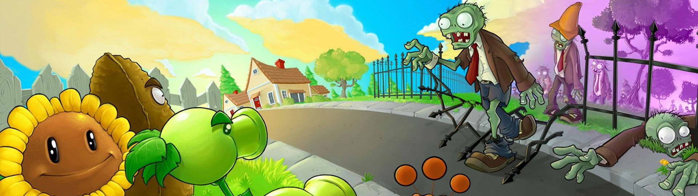

Plants vs Zombies
Plants vs. Zombies 2 là một trò chơi điện tử phòng thủ tháp do PopCap Games phát triển và phát hành
Giới thiệu
Trong Plants vs.Zombies, người chơi sẽ vào vai một người chủ nhà giữa bối cảnh tận thế zombie. Khi một đám zombie bắt đầu có ý định tiếp cận ngôi nhà dọc theo các làn đường song song, người chơi phải bảo vệ nhà bằng cách trồng cây trên làn đường để bắn đạn tiêu diệt lũ zombie hoặc gây bất lợi cho chúng. Người chơi thu thập một loại tiền tệ được gọi là "mặt trời" để mua cây. Nếu một zombie mà tiếp cận được ngôi nhà bằng bất kỳ làn đường nào, màn chơi coi như thất bại và người chơi sẽ phải khởi động lại màn đó.
Lối chơi
Plants vs.Zombies là trò chơi điện tử phòng thủ tháp, mục tiêu của người chơi là ngăn không cho zombie tiếp cận ngôi nhà. Bãi cỏ được chia thành lưới ô vuông,với nhà của người chơi nằm ở bên trái. Người chơi trồng các loại thực vật khác nhau trên từng ô vuông riêng lẻ của lưới. Mỗi cây có một phong cách phòng ngự khác nhau, chẳng hạn như bắn, phát nổ hoặc ngăn chặn. Mỗi loại zombie đều có những hành vi đặc biệt và điểm yếu riêng khi gặp một số loại cây nhất định. Ví dụ, zombie bóng bay (balloon zombie) có thể bay lơ lửng trên cây của người chơi, nhưng có thể bị khắc chế khi gặp cây xương rồng (cactus) bắn gai vào quả bóng Những ví dụ khác bao gồm zombie nhảy múa (dancing zombie) triệu hồi các vũ công nhảy phụ họa xung quanh nó; và zombie cưỡi cá heo (dolphin rider zombie) để nhảy qua một cái cây trồng trên nước.
Khi bắt đầu màn chơi, người chơi phải lựa chọn những loại cây sẽ trồng ở màn đó với số lượng giới hạn thông qua các gói hạt giống và muốn trồng chúng thì phải sử dụng một loại tiền tệ gọi là "mặt trời". Người chơi thu thập mặt trời bằng cách nhấp vào mặt trời rơi ngẫu nhiên trên bãi cỏ hoặc bằng các loại cây nhất định sản xuất ra mặt trời, chẳng hạn như hoa hướng dương (sunflower) hoặc nấm mặt trời (sunshroom). Sau khi trồng xong một loại cây thì sẽ tốn thêm khoảng thời gian nhất định để có thể trồng tiếp loại cây đó, mỗi loại cây khác nhau sẽ có tốc độ nạp lại khác nhau. Nếu người chơi muốn hủy bỏ một cây đã trồng, họ có thể nhổ nó bằng xẻng. Khi một zombie tiến sát rìa trái của một làn đường, máy cắt cỏ sẽ kích hoạt dọn sạch zombie của làn đó và không còn có thể sử dụng thêm một lần nào nữa trong màn đó; nếu một zombie khác đi đến cuối làn đường, người chơi sẽ phải khởi động lại màn chơi.
Bạn có thể tham khảo thêm thông tin tại đây.
Tải game
Hiện có thể tải game qua các nền tảng: iOS, Android.
Thông tin thêm
| Nhà phát triển | PopCap |
| Nhà phát hành | PopCap |
| Công nghệ | PopCap Framework |
| Nền tảng | iOS, Android |
| Chế độ | Một người chơi |
| Thể loại | Chiến lược |